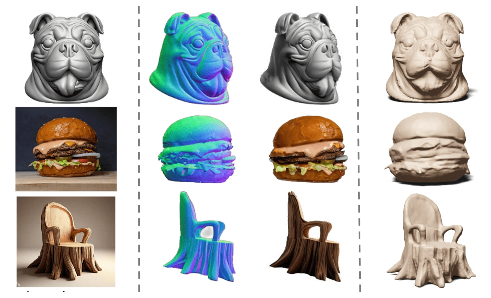
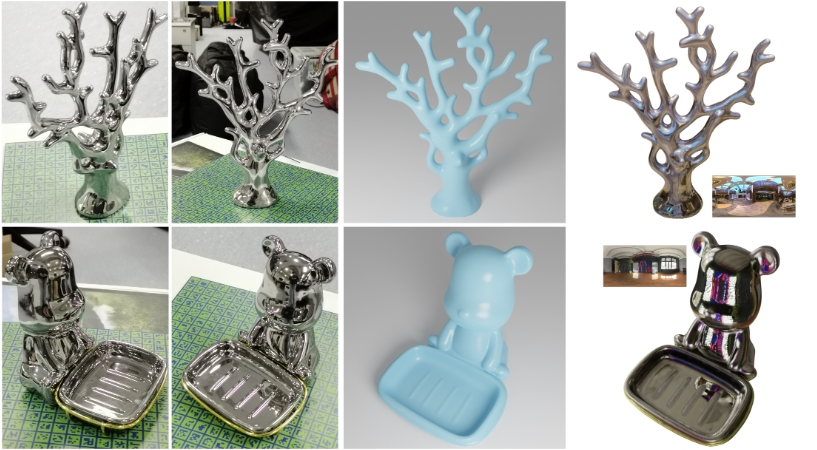

-

Surf-D Surface Diffusion with Arbitrary Topologies
High-Quality Surface Generation for Arbitrary Topologies using Diffusion Models.
Follow our new technique. -
Wonder3D: Cross-domain Diffusion Bridges 2D and 3D
Wonder3D produces consistent multi-view normal maps and correpsonding color images, and thus reconstructs high-fidelity textured mesh from a single image in only 2~3 minutes..

SyncDreamer
SyncDreamer is able to directly generate multiview consistent images, which allows 3D reconstruction by NeuS or NeRF without SDS loss.
Featured Work
- Wonder3D Single Image to 3D using Cross-Domain Diffusion
- NeuS Learning Neural Implicit Surfaces by Volume Rendering for Multi-view Reconstruction
-
 SyncDreamer Generating Multiview-consistent Images from a Single-view Image
SyncDreamer Generating Multiview-consistent Images from a Single-view Image -
 Gen6D Gen6D: Generalizable Model-Free 6-DoF Object Pose Estimation from RGB Images
Gen6D Gen6D: Generalizable Model-Free 6-DoF Object Pose Estimation from RGB Images - NeRO NeRO: Neural Geometry and BRDF Reconstruction of Reflective Objects from Multiview Images
 Song Byte Website / Interface Design
Song Byte Website / Interface Design
 Song Byte
Song Byte We Do Anything in 3D
We live in a 3D reality where the boundary between the virtual and the real world is becoming increasingly blurred. Our goal is to research innovative 3D AI technologies with the ultimate aim of enabling everyone to effortlessly create high-quality 3D digital content and forge their own virtual worlds.
About Team
AnySyn3D is a non-commercial, non-profit research interest group comprising individuals with a strong interest in exploring research problems and cutting-edge technologies in 3D AIGC.
Featured Works
If you want to see more our projects, click the button below for full showcase of our research work conducted by our memebers.
From the Media
Latest Tweet
@frankzydou Introducing 🚀Surf-D🚀, a novel method for generating high-quality 3D shapes as Surfaces with arbitrary topologies using Diffusion models. 29 November 2023
@AK introduce Wonder3D, a novel method for efficiently generating high-fidelity textured meshes from single-view images.Recent methods based on Score Distillation Sampling (SDS) have shown… 26 October 2023
@Yuan Liu Very happy to share our SIGGRAPH 2023 work "NeRO: Neural Geometry and BRDF Reconstruction of Reflective Objects from Multiview Images". 1 June 2023
Collaboration
„We enthusiastically invite you to engage in discussions and explore potential collaborations in any capacity. If you're interested in connecting or partnering with us, please don't hesitate to reach out via email. ”